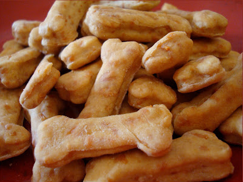

Cheesy Bones
Delicious golden cheesy doggy treats
These delicious cheesy doggy treats are sure to be a hit!
Ingredients
- 4 cups flour
- 2 cups shredded cheddar cheese
- 2 tbsp of oil
- 1 1/3 cups of water
Steps
- Combine flour and cheese
- Stir in oil and water
- Roll on floured cutting board to 3/8" thick
- Cut with bone shaped cutter
- Place on ungreased cookie sheet
- Bake in 250-350 degrees oven until dry